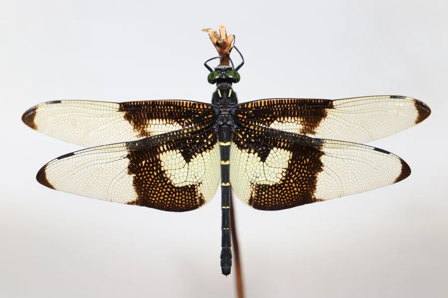

昆虫 · 动物界
蝴蝶裂唇蜓 Chlorogomphus papilio

翅膀宽大、飞行姿态像蝴蝶的大型蜓类，栖息于山区清澈溪流，体色黑黄相间，是溪流生态的标志性昆虫。
- 分类
- 门节肢动物门纲昆虫纲目蜻蜓目科裂唇蜓科属裂唇蜓属
- 栖息环境
- 山区清澈、流速较快的溪流和瀑布附近
- 地理分布
- 中国南方及越南北部的山区溪流
- 保护级别
- 暂无评估
物种志
蝴蝶裂唇蜓成虫体长 55–70 mm，翅展 90–110 mm，是体型较大的蜓类。体色黑黄相间，翅膀宽大、透明，翅脉复杂，停息时翅膀平展。它飞行时翅膀扇动缓慢，姿态轻盈，像蝴蝶一样飘飞，因此得名“蝴蝶裂唇蜓”。
蝴蝶裂唇蜓分布于中国南方及越南北部，栖息于山区清澈、流速较快的溪流和瀑布附近。成虫飞行姿态轻盈，捕食小型昆虫；稚虫水生，生活在溪流石缝中，捕食水生小动物，需要较长时间才能完成发育。它对水质要求高，是溪流生态的标志性昆虫，森林覆盖率和水质的变化都会影响它的种群。目前它没有IUCN 的正式评估，中国未将其列入国家重点保护野生动物名录。
形态与习性
- 食性成虫捕食小型昆虫，稚虫捕食水生小动物
- 体长55–70 mm，翅展 90–110 mm
- 飞行姿态翅膀扇动缓慢，像蝴蝶一样飘飞
- 栖息地山区清澈、流速较快的溪流和瀑布附近
- 稚虫水生，生活在溪流石缝中
- 水质指示对水质要求高，是溪流生态的标志性昆虫
趣味知识
- 蝴蝶裂唇蜓的翅膀宽大，飞行时像蝴蝶一样飘飞。
- 它生活在山区清澈的溪流边，对水质要求很高。
- 蜻蜓的稚虫在水中生活，变态羽化时才爬上水面植物。